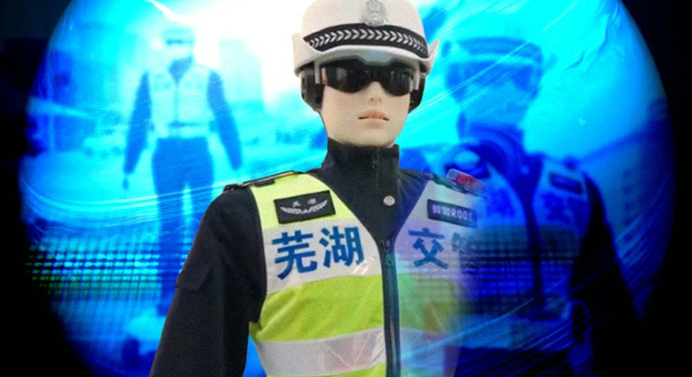

China puts robot officers on the streets to control traffic and issue parking ticket
 Police in Chinese cities are deploying AI-powered humanoid robots that assist with traffic management. “Intelligent Police Unit R001,” dubbed “RoboCop” by local media, is touted to detect violations in real time and warn offenders on-site.“Safety is the shortest way home. Please obey traffic regulations, do not run red lights,” a robot officer warns a pedestrian in a promo video.
In other situations, the robot wearing a uniform directs a bicycle rider to a non-motorized lane, performs standardized traffic gestures to control traffic in the middle of the road, or identifies illegal parking.
AiMOGA Robotics, a subsidiary of Chinese automaker Chery, has deployed “Wuyou” Intelligent Police Unit R001 in several Chinese cities.
The humanoid robot is touted for its multimodal perception system, which can detect violations in real time and deliver on-site warnings.
According to Xinhua, the state-run press agency in China, the robotic officers appeared in several cities, including Chengdu and Hangzhou. Humanoids complement the already existing team of robotic assistants, including quadruped or wheeled robots, patrolling streets alongside human police officers.